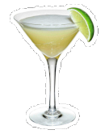

“Jack Sparrow: [empties bottle of rum] Why is the rum always gone? [stands up and staggers drunkenly] Oh… that's why.”- Captain Jack Sparrow
An American engineer first mixed the diaquiri cocktail in 1900 at a bar in Cuba.
British sailors were consuming the mix of rum, water, lime juice and sugar as a daily ration in the late 1700s.
President Roosevelt may be the individual credited for the daiquiri's surge in popularity in the 1940s.